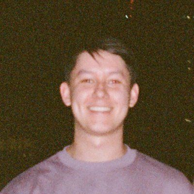
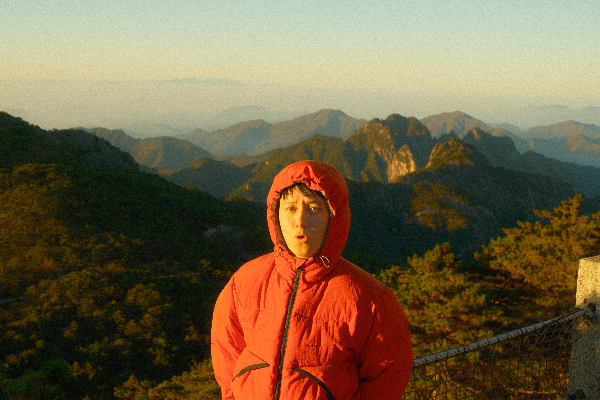

About John Ooi

John Ooi
At the heart of my work is an unfolding relationship with life.
I grew up in Liverpool, in a Roman Catholic family, and went to a Jewish primary school. My father is Malay Chinese and my mother is English. I knew what was in front of me wasn’t the only possible world.
I’ve learnt that we need each other. People bring out different parts of each other. We support one another by simply being who we are. I get to give and I get to receive, to be curious, to learn, and to discover.
a little more of the story
I travelled as a child, visiting family in Malaysia. Later, an awareness of mortality and ageing drew me towards travel. I love to learn from different cultures and have experiences I couldn’t have at home.

I went to medical school at UCL in London. An identity that had served me well at school didn’t translate to my new life there. I turned to meditation for help with anxiety and panic, and learnt that I was giving my thoughts too much power.
During a break from medical school, I volunteered at a school in Nepal, teaching English and science. I asked a child reading from a textbook to use their inside voice, then became curious about where it was for them. It wasn’t in their head. It was in their chest, where their heart was.
There are many ways to experience experience.
When COVID began, I was evacuated from the Himalayan mountains. Back in the UK, I supported nurses in intensive care units. I have a great appreciation for medicine, and love and respect for my friends who went on to become doctors. But a life in medicine wasn’t what I wanted.
During COVID, I started guiding meditations for friends. It just felt right. I didn’t know whether I wanted to become a meditation teacher, but I thought I’d better train.
My first training, MMTCP with Jack Kornfield and Tara Brach, opened my heart and gave me confidence. My second, with David Nichtern at Dharma Moon, gave me a great appreciation for precision and technique.
I appreciate that simple instructions can bring great freedom.
My outlook has been shaped by scientific thinking, spiritual practice, intuition and lived experience. I’ve developed a trust that makes room for doubt and critical thinking. When I work with someone, I bring that experience, ask questions and stay open to what we might discover together.
Maybe we should know each other.